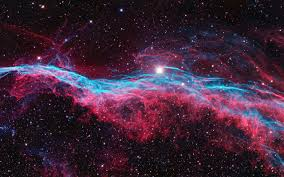

Descubre tu cielo

Encuentra lo que hay arriba de ti
Los seres humanos han estado mirando hacia el cielo en busca de respuestas desde el principio de los tiempos y los telescopios les han estado ayudando a obtener una mejor imagen cuando lo hacen durante cientos de años. Ahora tenemos telescopios terrestres y espaciales que pueden brindarnos terabytes y terabytes de datos que nos brindan información invaluable sobre la formación del universo, las estrellas, los planetas y mucho más.
Busca tus coordenadas
Escribe tus coordenadas
Selecciona onda de visualizacion